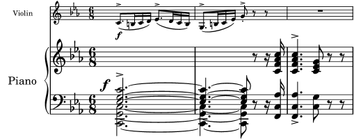

| [ << La gravure musicale ] | [Top][Contents][Index] | [ Références bibliographiques >> ] |
| [ < Lignes supplémentaires ] | [ Up: La gravure en détails ] | [ La raison de tous ces efforts > ] |
Tailles
Une même œuvre peut être imprimée dans différents formats – d’une partie instrumentale au conducteur format de poche. Les graveurs traditionnels utilisaient alors des poinçons différents pour obtenir le meilleur rendu selon la taille de la partition. L’avènement des fontes digitalisées permet d’obtenir n’importe quelle taille à partir d’un simple tracé. Bien que ceci constitue un progrès en soi, il nous faut cependant nuancer : les glyphes sont moins forts lorsqu’ils sont de taille réduite.
Pour les besoins de LilyPond, nous avons créé des polices de graisse différente selon la taille. Voici ce que produit LilyPond dans une taille de portée de 26 points :

et la même musique en 11 points, grossie de 236 % pour obtenir une taille identique à l’image précédente :

Comme vous le constatez, LilyPond imprime des lignes un peu plus épaisses pour garantir une meilleure lecture à taille réduite.
Ceci permet par ailleurs de faire coexister harmonieusement plusieurs portées de taille différente sur une même page :

| [ << La gravure musicale ] | [Top][Contents][Index] | [ Références bibliographiques >> ] |
| [ < Lignes supplémentaires ] | [ Up: La gravure en détails ] | [ La raison de tous ces efforts > ] |